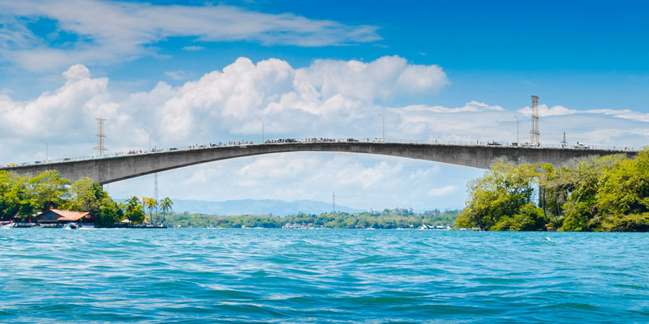
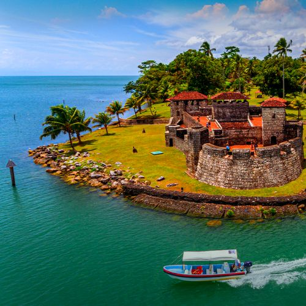
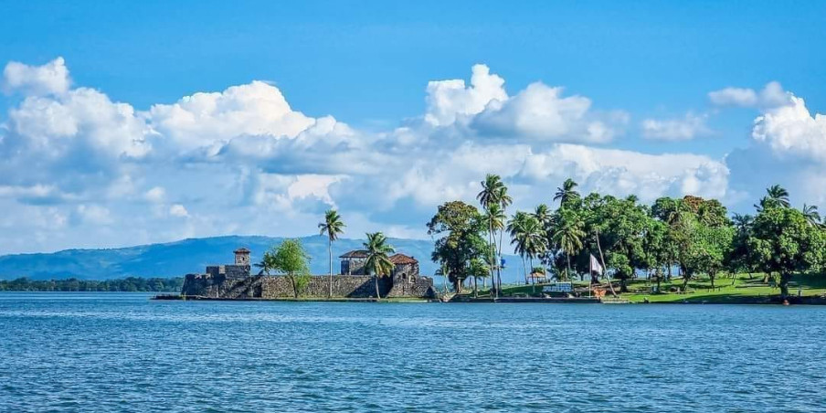
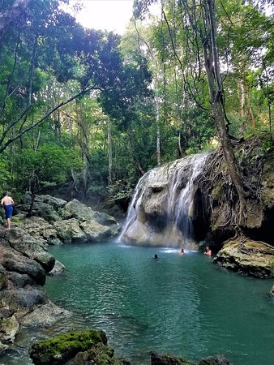
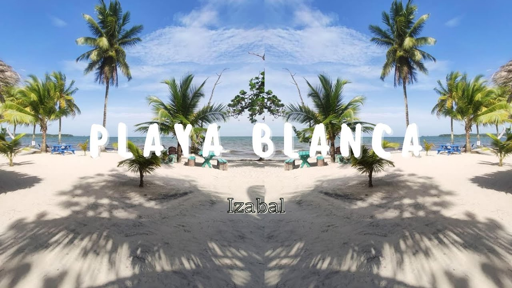

Este río conecta el lago de Izabal con el mar Caribe y es un destino popular para navegar y observar la fauna.

Una fortaleza colonial histórica construida para defenderse de los piratas, ubicada cerca de Río Dulce.

Pueblo caribeño accesible solo por agua, famoso por su cultura garífuna, música punta y gastronomía como el tapado.

Un balneario natural con una cascada de agua caliente que cae sobre un río frío.

Una de las pocas playas de arena blanca en la región, ideal para relajarse.
